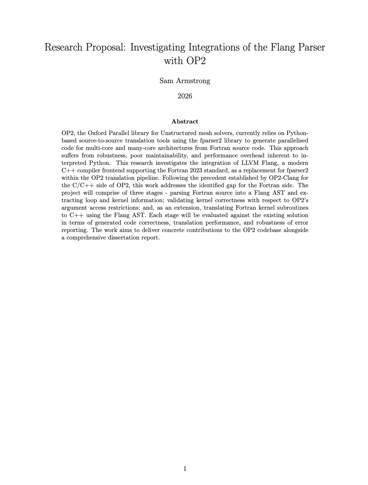
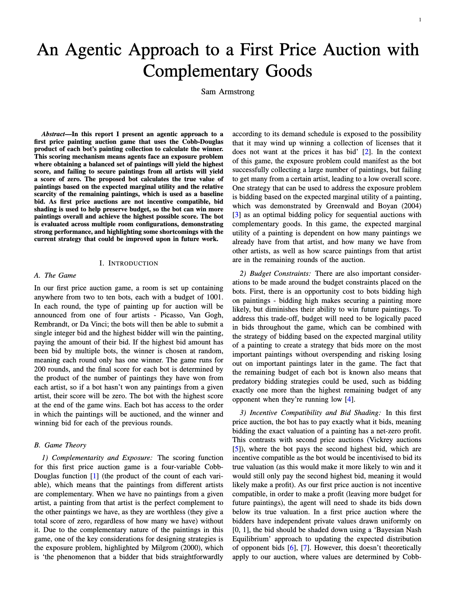
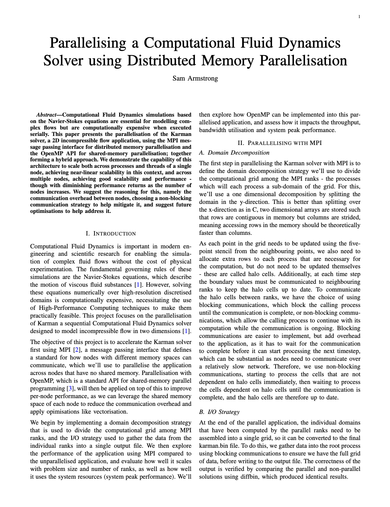
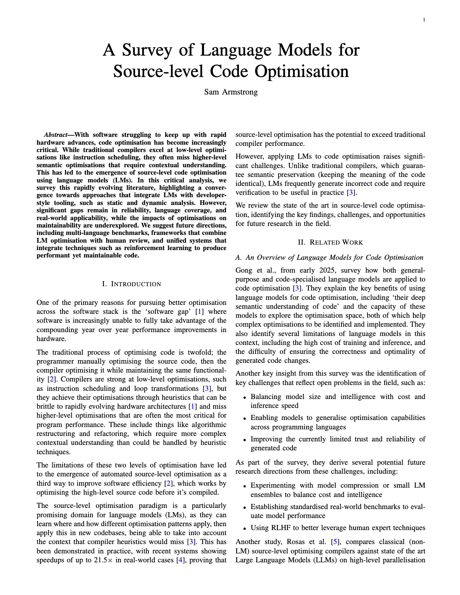
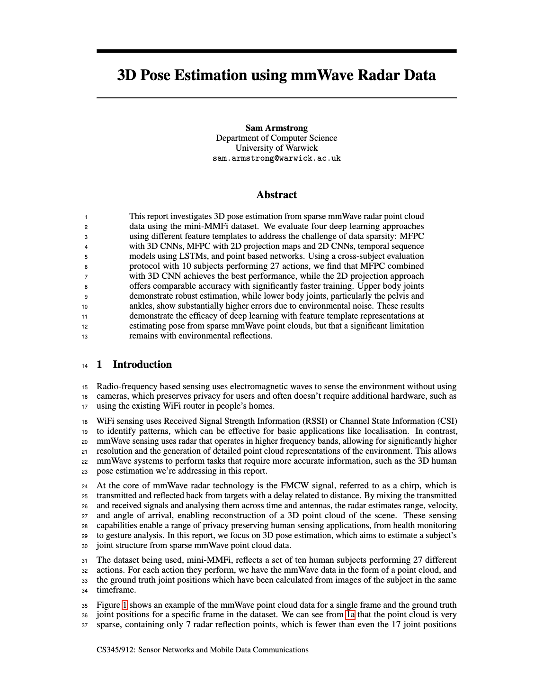
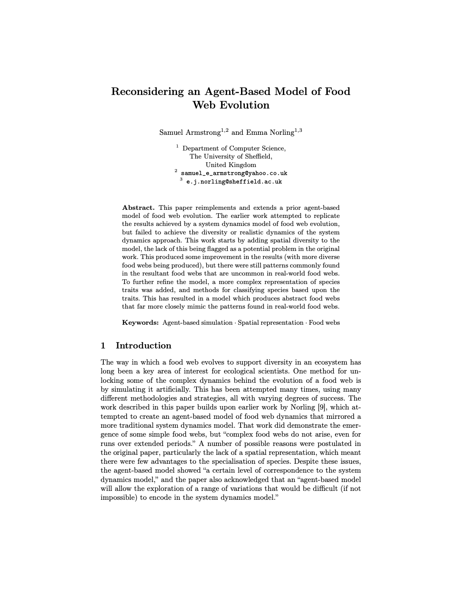

Sam Armstrong
 github.com/Sam-Armstrong
github.com/Sam-Armstrong
Interesting Things I've Worked On
-
Skills
- Python
- System Design
- GCP
- Agentic AI
- AI Deployment
- React/TypeScript
-
Skills
- Python
- PyTorch
- Neural Networks
- ML Pipelines
- Data Engineering
- Web Scraping
-
Skills
- C++
- Python
- AST
- Compilers
- Domain Specific Languages
-
Skills
- Python
- PyTorch/JAX
- Neural Networks
- Graph Compilation
- AST
Writing
-

Research Proposal: Investigating Integrations of the Flang Parser with OP2
2026
-

An Agentic Approach to a First Price Auction with Complementary Goods
2026
-

Parallelising a Computational Fluid Dynamics Solver using Distributed Memory Parallelisation
2026
-

A Survey of Language Models for Source-level Code Optimisation
2025
-

3D Pose Estimation using mmWave Radar Data
2025
-

Reconsidering an Agent-Based Model of Food Web Evolution
2022
Education
-
MSc Computer Science
Notable modules
- Sensor Networks and Data Communications
- Agent Based Systems
- Machine Learning Applications
- High Performance Computing
- Computer Security
- Foundations of Computer Science
- HPC Thesis
-
BSc Artificial Intelligence and Computer Science
Grade: First Class Honours
Notable modules
- Agent-Based Modelling Dissertation
- Adaptive Intelligence
- Text Processing
- Speech Processing
- Bioinspired Computing
- Software Reengineering
- System Design and Security
- Functional Programming
Experience
-
Co-Founder
Co-founded Ivy as a spin-off from Unify AI, after it pivoted into creating AI teammates for task management and delivery. We saw an opportunity to convert Ivy into a source-to-source transpiler for models and code between frameworks, using the multi-backend machine learning framework as a backbone and intermediate representation for this process. We successfully achieved a strong baseline of PyTorch -> {JAX, TensorFlow, NumPy} transpilations, and integrated Ivy into Kornia to allow their PyTorch-based computer vision library to be natively used with JAX, TensorFlow, and NumPy.
Skills
- Placeholder skill
- Placeholder skill
- Placeholder skill
-
Machine Learning Software Engineer
Worked on developing the initial form of Ivy - a multi-backend machine learning framework. Primarily focused on creating a graph compiler capable of extracting efficient computational graphs from arbitrary Python code using function tracing, with features like subgraph tracing (to allow dynamic control flow to be captured) and automatic graph optimisation.
Skills
- Python
- Git
- CI/CD
- Deep Learning Infrastructure
- Large Codebases
- Agile Development
-
Machine Learning Engineer
Skills
- Placeholder skill
- Placeholder skill
- Placeholder skill
Miscellaneous